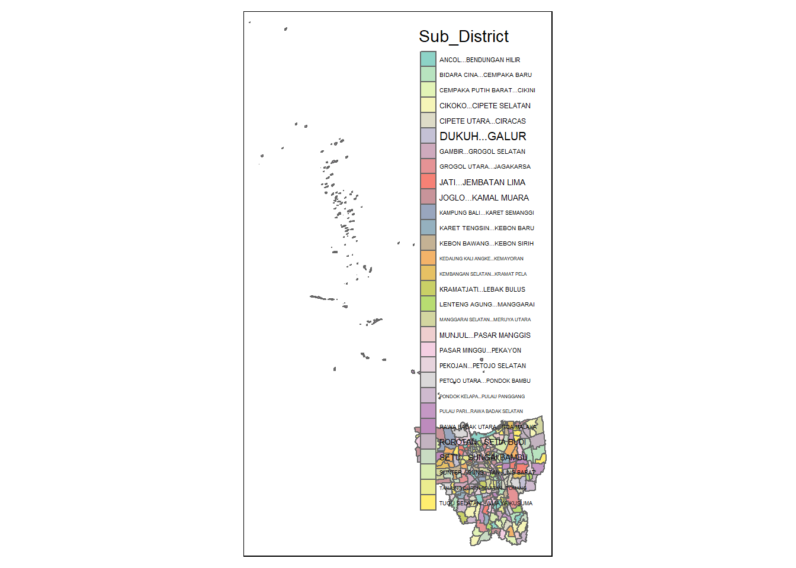
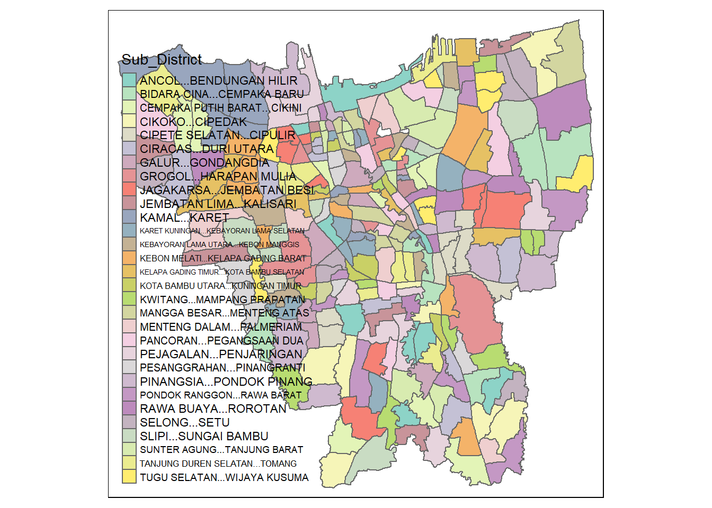
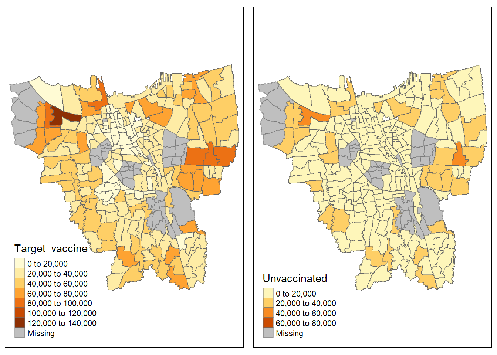
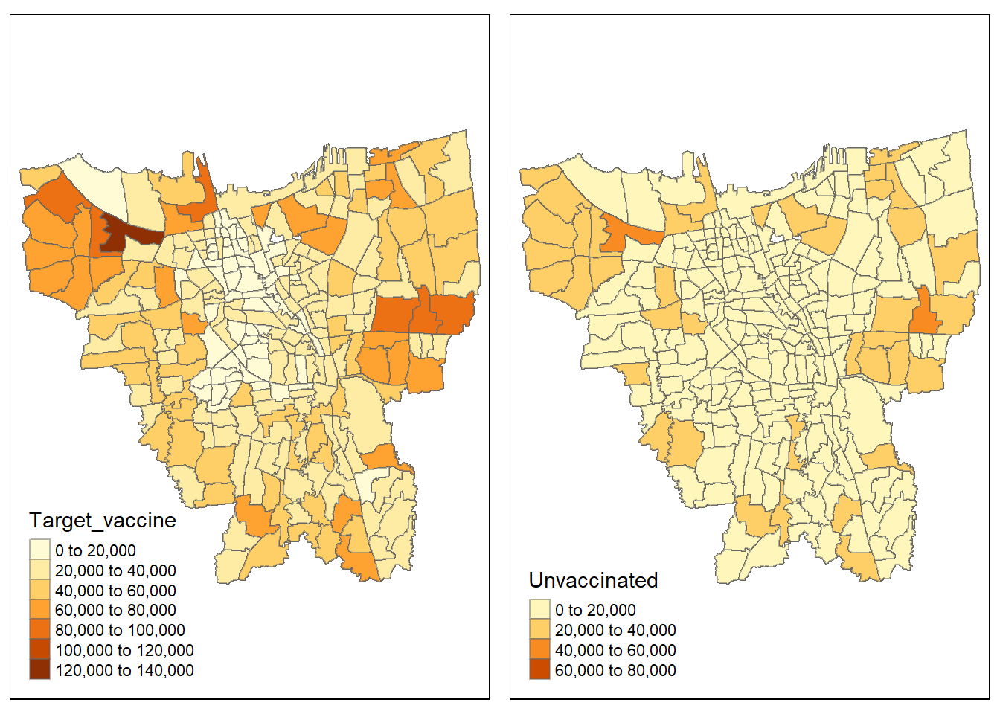
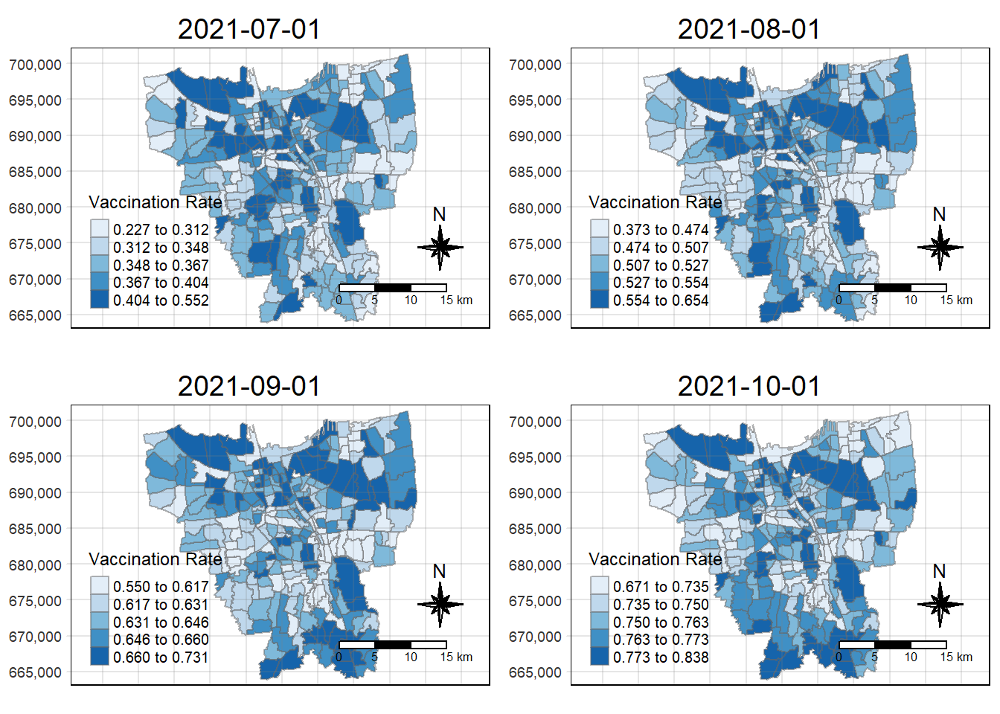
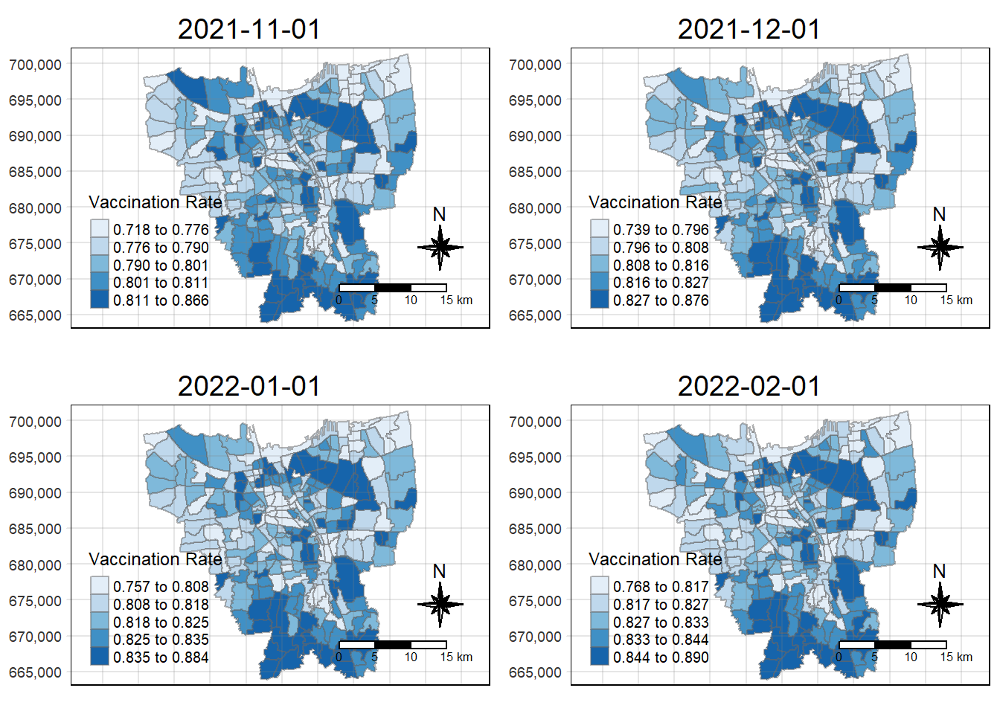
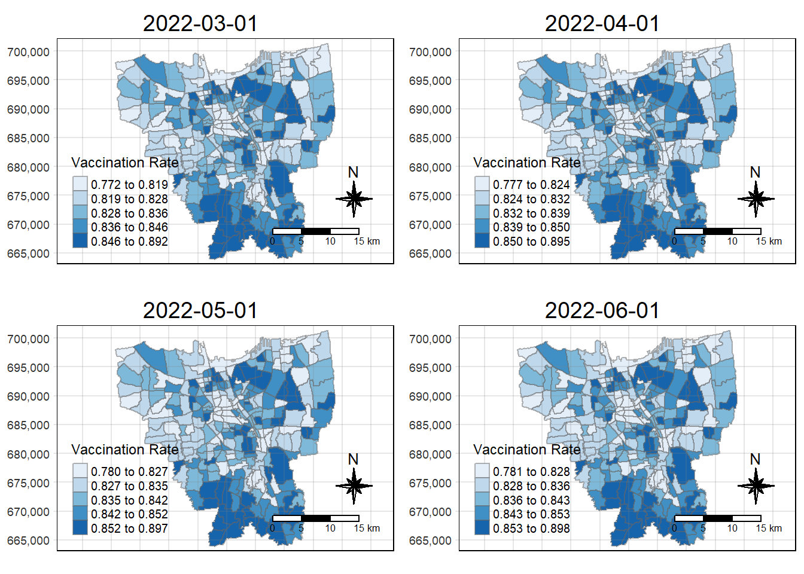

pacman::p_load(plyr , sf, tidyverse, readxl, tmap, maptools, kableExtra, janitor)Take Home Exercise 2
Introduction
In this study, we aim to undercover the spatio-temporal trends of COVID-19 vaccination in DKI Jakarta and the sub-districts to see their distribution across. A further analysis on how the distribution changed overtime will also be conducted.
Data
The following data will be used in the analysis.
Aspatial
Data Vaksinasi Berbasis Kelurahan (01 Juli 2021) | Format: .xlsx | Riwayat File Vaksinasi DKI Jakarta
Geospatial
BATAS_DESA_DESEMBER_2019_DUKCAPIL_DKI_JAKARTA | Format: Shapefile | Indonesia Geospatial portal
Install and load packages
Data Import
Geospatial Data
jakarta_data <- st_read(dsn="data/geospatial",
layer="BATAS_DESA_DESEMBER_2019_DUKCAPIL_DKI_JAKARTA")Reading layer `BATAS_DESA_DESEMBER_2019_DUKCAPIL_DKI_JAKARTA' from data source
`C:\celinderr\IS415-GAA\Take-home_Ex\Take-home_Ex02\data\geospatial'
using driver `ESRI Shapefile'
Simple feature collection with 269 features and 161 fields
Geometry type: MULTIPOLYGON
Dimension: XY
Bounding box: xmin: 106.3831 ymin: -6.370815 xmax: 106.9728 ymax: -5.184322
Geodetic CRS: WGS 84Data Wrangling
Check for invalid geometries
Reference from senior sample submissions for code for this section, with credit to Megan’s Take-Home Exercise 1: Analysing and Visualising Spatio-temporal Patterns of COVID-19 in DKI Jakarta, Indonesia
length(which(st_is_valid(jakarta_data) == FALSE))[1] 0No invalid geometries
Check for missing values
jakarta_data[rowSums(is.na(jakarta_data))!=0,]Simple feature collection with 2 features and 161 fields
Geometry type: MULTIPOLYGON
Dimension: XY
Bounding box: xmin: 106.8412 ymin: -6.154036 xmax: 106.8612 ymax: -6.144973
Geodetic CRS: WGS 84
OBJECT_ID KODE_DESA DESA KODE PROVINSI KAB_KOTA KECAMATAN
243 25645 31888888 DANAU SUNTER 318888 DKI JAKARTA <NA> <NA>
244 25646 31888888 DANAU SUNTER DLL 318888 DKI JAKARTA <NA> <NA>
DESA_KELUR JUMLAH_PEN JUMLAH_KK LUAS_WILAY KEPADATAN PERPINDAHA JUMLAH_MEN
243 <NA> 0 0 0 0 0 0
244 <NA> 0 0 0 0 0 0
PERUBAHAN WAJIB_KTP SILAM KRISTEN KHATOLIK HINDU BUDHA KONGHUCU KEPERCAYAA
243 0 0 0 0 0 0 0 0 0
244 0 0 0 0 0 0 0 0 0
PRIA WANITA BELUM_KAWI KAWIN CERAI_HIDU CERAI_MATI U0 U5 U10 U15 U20 U25
243 0 0 0 0 0 0 0 0 0 0 0 0
244 0 0 0 0 0 0 0 0 0 0 0 0
U30 U35 U40 U45 U50 U55 U60 U65 U70 U75 TIDAK_BELU BELUM_TAMA TAMAT_SD SLTP
243 0 0 0 0 0 0 0 0 0 0 0 0 0 0
244 0 0 0 0 0 0 0 0 0 0 0 0 0 0
SLTA DIPLOMA_I DIPLOMA_II DIPLOMA_IV STRATA_II STRATA_III BELUM_TIDA
243 0 0 0 0 0 0 0
244 0 0 0 0 0 0 0
APARATUR_P TENAGA_PEN WIRASWASTA PERTANIAN NELAYAN AGAMA_DAN PELAJAR_MA
243 0 0 0 0 0 0 0
244 0 0 0 0 0 0 0
TENAGA_KES PENSIUNAN LAINNYA GENERATED KODE_DES_1 BELUM_ MENGUR_ PELAJAR_
243 0 0 0 <NA> <NA> 0 0 0
244 0 0 0 <NA> <NA> 0 0 0
PENSIUNA_1 PEGAWAI_ TENTARA KEPOLISIAN PERDAG_ PETANI PETERN_ NELAYAN_1
243 0 0 0 0 0 0 0 0
244 0 0 0 0 0 0 0 0
INDUSTR_ KONSTR_ TRANSP_ KARYAW_ KARYAW1 KARYAW1_1 KARYAW1_12 BURUH BURUH_
243 0 0 0 0 0 0 0 0 0
244 0 0 0 0 0 0 0 0 0
BURUH1 BURUH1_1 PEMBANT_ TUKANG TUKANG_1 TUKANG_12 TUKANG__13 TUKANG__14
243 0 0 0 0 0 0 0 0
244 0 0 0 0 0 0 0 0
TUKANG__15 TUKANG__16 TUKANG__17 PENATA PENATA_ PENATA1_1 MEKANIK SENIMAN_
243 0 0 0 0 0 0 0 0
244 0 0 0 0 0 0 0 0
TABIB PARAJI_ PERANCA_ PENTER_ IMAM_M PENDETA PASTOR WARTAWAN USTADZ JURU_M
243 0 0 0 0 0 0 0 0 0 0
244 0 0 0 0 0 0 0 0 0 0
PROMOT ANGGOTA_ ANGGOTA1 ANGGOTA1_1 PRESIDEN WAKIL_PRES ANGGOTA1_2
243 0 0 0 0 0 0 0
244 0 0 0 0 0 0 0
ANGGOTA1_3 DUTA_B GUBERNUR WAKIL_GUBE BUPATI WAKIL_BUPA WALIKOTA WAKIL_WALI
243 0 0 0 0 0 0 0 0
244 0 0 0 0 0 0 0 0
ANGGOTA1_4 ANGGOTA1_5 DOSEN GURU PILOT PENGACARA_ NOTARIS ARSITEK AKUNTA_
243 0 0 0 0 0 0 0 0 0
244 0 0 0 0 0 0 0 0 0
KONSUL_ DOKTER BIDAN PERAWAT APOTEK_ PSIKIATER PENYIA_ PENYIA1 PELAUT
243 0 0 0 0 0 0 0 0 0
244 0 0 0 0 0 0 0 0 0
PENELITI SOPIR PIALAN PARANORMAL PEDAGA_ PERANG_ KEPALA_ BIARAW_ WIRASWAST_
243 0 0 0 0 0 0 0 0 0
244 0 0 0 0 0 0 0 0 0
LAINNYA_12 LUAS_DESA KODE_DES_3 DESA_KEL_1 KODE_12
243 0 0 <NA> <NA> 0
244 0 0 <NA> <NA> 0
geometry
243 MULTIPOLYGON (((106.8612 -6...
244 MULTIPOLYGON (((106.8504 -6...Remove missing fields
jakarta_data <- na.omit(jakarta_data,c("DESA_KELUR"))Check coordinate system of data
st_crs(jakarta_data)Coordinate Reference System:
User input: WGS 84
wkt:
GEOGCRS["WGS 84",
DATUM["World Geodetic System 1984",
ELLIPSOID["WGS 84",6378137,298.257223563,
LENGTHUNIT["metre",1]]],
PRIMEM["Greenwich",0,
ANGLEUNIT["degree",0.0174532925199433]],
CS[ellipsoidal,2],
AXIS["latitude",north,
ORDER[1],
ANGLEUNIT["degree",0.0174532925199433]],
AXIS["longitude",east,
ORDER[2],
ANGLEUNIT["degree",0.0174532925199433]],
ID["EPSG",4326]]Note: WGS84 is not appropriate, have to change to national coordinate system of Indonesia – DGN95
jakarta_data <- st_transform(jakarta_data, 23845)Check if CRS changed
st_crs(jakarta_data)Coordinate Reference System:
User input: EPSG:23845
wkt:
PROJCRS["DGN95 / Indonesia TM-3 zone 54.1",
BASEGEOGCRS["DGN95",
DATUM["Datum Geodesi Nasional 1995",
ELLIPSOID["WGS 84",6378137,298.257223563,
LENGTHUNIT["metre",1]]],
PRIMEM["Greenwich",0,
ANGLEUNIT["degree",0.0174532925199433]],
ID["EPSG",4755]],
CONVERSION["Indonesia TM-3 zone 54.1",
METHOD["Transverse Mercator",
ID["EPSG",9807]],
PARAMETER["Latitude of natural origin",0,
ANGLEUNIT["degree",0.0174532925199433],
ID["EPSG",8801]],
PARAMETER["Longitude of natural origin",139.5,
ANGLEUNIT["degree",0.0174532925199433],
ID["EPSG",8802]],
PARAMETER["Scale factor at natural origin",0.9999,
SCALEUNIT["unity",1],
ID["EPSG",8805]],
PARAMETER["False easting",200000,
LENGTHUNIT["metre",1],
ID["EPSG",8806]],
PARAMETER["False northing",1500000,
LENGTHUNIT["metre",1],
ID["EPSG",8807]]],
CS[Cartesian,2],
AXIS["easting (X)",east,
ORDER[1],
LENGTHUNIT["metre",1]],
AXIS["northing (Y)",north,
ORDER[2],
LENGTHUNIT["metre",1]],
USAGE[
SCOPE["Cadastre."],
AREA["Indonesia - onshore east of 138°E."],
BBOX[-9.19,138,-1.49,141.01]],
ID["EPSG",23845]]Removing redundant data
We are only interested in DKI Jakarta, hence we will be removing other islands or districts from the data.
Since KAB-KOTA which is ‘City’ will be the best way to filter them, we take a look at the cities in this dataset.
unique(jakarta_data$"KAB_KOTA")[1] "JAKARTA BARAT" "JAKARTA PUSAT" "KEPULAUAN SERIBU" "JAKARTA UTARA"
[5] "JAKARTA TIMUR" "JAKARTA SELATAN" Translation of column names for ease of handling data
Using rename() of dplyr package
jakarta_data <- jakarta_data %>%
dplyr::rename(
Object_ID=OBJECT_ID,
Province=PROVINSI,
City=KAB_KOTA,
District=KECAMATAN,
Village_Code=KODE_DESA,
Village=DESA,
Sub_District=DESA_KELUR,
Code=KODE,
Total_Population=JUMLAH_PEN
)Visualising to see all cities in this dataset
tm_shape(jakarta_data) +
tm_polygons("Sub_District")Warning: Number of levels of the variable "Sub_District" is 267, which is
larger than max.categories (which is 30), so levels are combined. Set
tmap_options(max.categories = 267) in the layer function to show all levels.Legend labels were too wide. The labels have been resized to 0.35, 0.31, 0.30, 0.36, 0.38, 0.60, 0.34, 0.32, 0.44, 0.41, 0.27, 0.31, 0.30, 0.26, 0.25, 0.34, 0.30, 0.24, 0.35, 0.35, 0.33, 0.28, 0.25, 0.26, 0.27, 0.42, 0.42, 0.28, 0.25, 0.28. Increase legend.width (argument of tm_layout) to make the legend wider and therefore the labels larger.
Removing redundant data
jakarta_data <- filter(jakarta_data, City != "KEPULAUAN SERIBU")Note: reduced from 267 observations to 261 observations
Retaining first 9 fields of jakarta_data as per assignment instructions
jakarta_data <- jakarta_data[, 0:9]Note: reduced to 10 variables
Final visualisation of DKI Jakarta data
tm_shape(jakarta_data) +
tm_polygons("Sub_District")Warning: Number of levels of the variable "Sub_District" is 261, which is
larger than max.categories (which is 30), so levels are combined. Set
tmap_options(max.categories = 261) in the layer function to show all levels.Some legend labels were too wide. These labels have been resized to 0.63, 0.42, 0.44, 0.49, 0.41, 0.50, 0.60, 0.59, 0.62, 0.61, 0.57, 0.57, 0.53, 0.59. Increase legend.width (argument of tm_layout) to make the legend wider and therefore the labels larger.
Aspatial Data
july2021 <- read_xlsx("data/aspatial/Vaccination 01 Juli 2021 Jarkarta.xlsx")Aspatial Data Pre-processing Function
# takes in an aspatial data filepath and returns a processed output
aspatial_preprocess <- function(filepath){
# read xlsx file
result_file <- read_xlsx(filepath)
# Create the Date Column
# the format of our files is: Vaccination DD MM YYYY Jarkarta
# Starting Point: Vaccination
# End Point: Jarkarta
# Use [1] to indicate first element in the list
# reference https://stackoverflow.com/questions/14249562/find-the-location-of-a-character-in-string
startpoint <- gregexpr(pattern="Vaccination", filepath)[[1]] + 12
endpoint <- gregexpr(pattern="Jarkarta", filepath)[[1]] - 2
result_file$Date <- substr(filepath, startpoint, endpoint)
# Retain the Relevant Columns
result_file <- result_file %>%
select("Date",
"WILAYAH KOTA",
"KECAMATAN",
"KELURAHAN",
"SASARAN",
"BELUM VAKSIN")
return(result_file)
}Feed files into preprocessing function
# in the folder 'data/aspatial', find files with the extension '.xlsx' and add it to our fileslist
# the full.names=TRUE prepends the directory path to the file names, giving a relative file path - otherwise, only the file names (not the paths) would be returned
# reference: https://stat.ethz.ch/R-manual/R-devel/library/base/html/list.files.html
fileslist <-list.files(path = "data/aspatial", pattern = "*.xlsx", full.names=TRUE)
# afterwards, for every element in fileslist, apply aspatial_process function
dflist <- lapply(seq_along(fileslist), function(x) aspatial_preprocess(fileslist[x]))Convert dflist into actual dataframe
cases_jakarta <- ldply(dflist, data.frame)Check cases_jakarta
glimpse(cases_jakarta)Rows: 3,216
Columns: 6
$ Date <chr> "01 Agustus 2021 ", "01 Agustus 2021 ", "01 Agustus 2021 …
$ WILAYAH.KOTA <chr> NA, "JAKARTA UTARA", "JAKARTA BARAT", "JAKARTA TIMUR", "J…
$ KECAMATAN <chr> NA, "PADEMANGAN", "TAMBORA", "KRAMAT JATI", "JATINEGARA",…
$ KELURAHAN <chr> "TOTAL", "ANCOL", "ANGKE", "BALE KAMBANG", "BALI MESTER",…
$ SASARAN <dbl> 8941211, 23947, 29381, 29074, 9752, 26285, 21566, 23886, …
$ BELUM.VAKSIN <dbl> 4399496, 12155, 13727, 18226, 4987, 13716, 10232, 9999, 2…Format Date Column
# parses the 'Date' column into Month(Full Name)-YYYY datetime objects
# reference: https://stackoverflow.com/questions/53380650/b-y-date-conversion-gives-na
# locale="ind" means that the locale has been set as Indonesia
Sys.setlocale(locale="ind")Warning in Sys.setlocale(locale = "ind"): using locale code page other than
65001 ("UTF-8") may cause problems[1] "LC_COLLATE=Indonesian_Indonesia.1252;LC_CTYPE=Indonesian_Indonesia.1252;LC_MONETARY=Indonesian_Indonesia.1252;LC_NUMERIC=C;LC_TIME=Indonesian_Indonesia.1252"cases_jakarta$Date <- c(cases_jakarta$Date) %>%
as.Date(cases_jakarta$Date, format ="%d %B %Y")
glimpse(cases_jakarta)Rows: 3,216
Columns: 6
$ Date <date> 2021-08-01, 2021-08-01, 2021-08-01, 2021-08-01, 2021-08-~
$ WILAYAH.KOTA <chr> NA, "JAKARTA UTARA", "JAKARTA BARAT", "JAKARTA TIMUR", "J~
$ KECAMATAN <chr> NA, "PADEMANGAN", "TAMBORA", "KRAMAT JATI", "JATINEGARA",~
$ KELURAHAN <chr> "TOTAL", "ANCOL", "ANGKE", "BALE KAMBANG", "BALI MESTER",~
$ SASARAN <dbl> 8941211, 23947, 29381, 29074, 9752, 26285, 21566, 23886, ~
$ BELUM.VAKSIN <dbl> 4399496, 12155, 13727, 18226, 4987, 13716, 10232, 9999, 2~Renaming columns
cases_jakarta <- cases_jakarta %>%
rename(
Date=Date,
City = WILAYAH.KOTA,
District = KECAMATAN,
Sub_District = KELURAHAN,
Target_vaccine = SASARAN,
Unvaccinated = BELUM.VAKSIN
)Data Integration of Geospatial and Aspatial
# checks for column names of the dataframes
colnames(jakarta_data) [1] "Object_ID" "Village_Code" "Village" "Code"
[5] "Province" "City" "District" "Sub_District"
[9] "Total_Population" "geometry" colnames(cases_jakarta)[1] "Date" "City" "District" "Sub_District"
[5] "Target_vaccine" "Unvaccinated" # joins cases_jakarta to bd_jakarta based on Province, Sub_District and City
combined_jakarta <- left_join(jakarta_data, cases_jakarta,
by=c(
"District"="District",
"Sub_District"="Sub_District",
"City"="City")
)Now let’s visualise subdistrict in terms of unvaccinated and target vaccine
target_vaccine <- tm_shape(combined_jakarta) +
tm_borders(alpha = 0.5) +
tm_fill("Target_vaccine")
not_vaccinated <- tm_shape(combined_jakarta) +
tm_borders(alpha = 0.5) +
tm_fill("Unvaccinated")
tmap_arrange(target_vaccine, not_vaccinated)
As shown above, there are grey areas in the map. These are missing values which might be caused by mismatched records from joining subdistricts/city from the 2 dataframes.
Correcting mismatched records
To find, we see what was in jakarta_data but not in cases_jakarta
vaccine_subdistrict <- c(cases_jakarta$Sub_District)
jakarta_subdistrict <- c(jakarta_data$Sub_District)
unique(vaccine_subdistrict[!(vaccine_subdistrict %in% jakarta_subdistrict)]) [1] "TOTAL" "BALE KAMBANG" "HALIM PERDANA KUSUMAH"
[4] "JATI PULO" "KAMPUNG TENGAH" "KERENDANG"
[7] "KRAMAT JATI" "PAL MERIAM" "PINANG RANTI"
[10] "PULAU HARAPAN" "PULAU KELAPA" "PULAU PANGGANG"
[13] "PULAU PARI" "PULAU TIDUNG" "PULAU UNTUNG JAWA"
[16] "RAWA JATI" unique(jakarta_subdistrict[!(jakarta_subdistrict %in% vaccine_subdistrict)])[1] "KRENDANG" "RAWAJATI" "TENGAH"
[4] "BALEKAMBANG" "PINANGRANTI" "JATIPULO"
[7] "PALMERIAM" "KRAMATJATI" "HALIM PERDANA KUSUMA"Let us visualise the mismatched records
| Geospatial Data (jakarta_subdistrict) | Aspatial Data (vaccine_subdistrict) |
|---|---|
| BALEKAMBANG | BALE KAMBANG |
| HALIM PERDANA KUSUMA | HALIM PERDANA KUSUMAH |
| JATIPULO | JATI PULO |
| TENGAH | KAMPUNG TENGAH |
| KRENDANG | KERENDANG |
| KRAMATJATI | KRAMAT JATI |
| PALMERIAN | PAL MERIAN |
| PINANGRANTI | PINANG RANTI |
| RAWAJATI | RAWA JATI |
Renaming mismatched records
# where bd_jakarta is a mismatched value, replace with the correct value
jakarta_data$Sub_District[jakarta_data$Sub_District == 'BALEKAMBANG'] <- 'BALE KAMBANG'
jakarta_data$Sub_District[jakarta_data$Sub_District == 'HALIM PERDANA KUSUMA'] <- 'HALIM PERDANA KUSUMAH'
jakarta_data$Sub_District[jakarta_data$Sub_District == 'JATIPULO'] <- 'JATI PULO'
jakarta_data$Sub_District[jakarta_data$Sub_District == 'TENGAH'] <- 'KAMPUNG TENGAH'
jakarta_data$Sub_District[jakarta_data$Sub_District == 'KRAMATJATI'] <- 'KRAMAT JATI'
jakarta_data$Sub_District[jakarta_data$Sub_District == 'KRENDANG'] <- 'KERENDANG'
jakarta_data$Sub_District[jakarta_data$Sub_District == 'PALMERIAM'] <- 'PAL MERIAM'
jakarta_data$Sub_District[jakarta_data$Sub_District == 'PINANGRANTI'] <- 'PINANG RANTI'
jakarta_data$Sub_District[jakarta_data$Sub_District == 'RAWAJATI'] <- 'RAWA JATI'Joining both dataframes by sub-district
combined_jakarta <- left_join(jakarta_data, cases_jakarta,
by=c("Sub_District" = "Sub_District"))Visualising data once again
target_vaccine <- tm_shape(combined_jakarta) +
tm_borders(alpha = 0.5) +
tm_fill("Target_vaccine")
not_vaccinated <- tm_shape(combined_jakarta) +
tm_borders(alpha = 0.5) +
tm_fill("Unvaccinated")
tmap_arrange(target_vaccine, not_vaccinated)
Calculations
Computation of Monthly Vaccination Rate
vaccine_rate <- cases_jakarta %>%
inner_join(jakarta_data, by=c("Sub_District" = "Sub_District")) %>%
group_by(Sub_District, Date) %>%
summarise(`vaccination_rate` = (Target_vaccine - Unvaccinated)/Target_vaccine)`summarise()` has grouped output by 'Sub_District'. You can override using the
`.groups` argument.glimpse(vaccine_rate)Rows: 3,132
Columns: 3
Groups: Sub_District [261]
$ Sub_District <chr> "ANCOL", "ANCOL", "ANCOL", "ANCOL", "ANCOL", "ANCOL",~
$ Date <date> 2021-07-01, 2021-08-01, 2021-09-01, 2021-10-01, 2021~
$ vaccination_rate <dbl> 0.3491884, 0.4924208, 0.6184073, 0.7224287, 0.7509083~vaccine_rate_pivot <- vaccine_rate %>% ungroup() %>% pivot_wider(names_from = Date, values_from = vaccination_rate)Mapping Monthly Vaccination Rate
Convert to sf dataframe first
combined_jakarta <- st_as_sf(combined_jakarta)vaccine_rate_pivot <- vaccine_rate_pivot %>% left_join(jakarta_data, by=c("Sub_District" = "Sub_District"))
vaccine_rate_pivot <- st_as_sf(vaccine_rate_pivot)Create map helper function for recursive map plotting
map_function <- function(df, varname) {
tm_shape(df) +
tm_fill(varname,
style = "quantile",
palette = "Blues",
title = "Vaccination Rate") +
tm_layout(main.title = varname,
main.title.position = "center",
main.title.size = 1.2,
legend.height = 0.45,
legend.width = 0.35,
frame = TRUE) +
tm_borders(alpha = 0.5) +
tm_compass(type = "8star", size = 2) +
tm_scale_bar() +
tm_grid(alpha = 0.2)
}Executing the function
tmap_mode("plot")tmap mode set to plottingtmap_arrange(map_function(vaccine_rate_pivot, "2021-07-01"),
map_function(vaccine_rate_pivot, "2021-08-01"),
map_function(vaccine_rate_pivot, "2021-09-01"),
map_function(vaccine_rate_pivot, "2021-10-01"))
tmap_arrange(map_function(vaccine_rate_pivot, "2021-11-01"),
map_function(vaccine_rate_pivot, "2021-12-01"),
map_function(vaccine_rate_pivot, "2022-01-01"),
map_function(vaccine_rate_pivot, "2022-02-01"))
tmap_arrange(map_function(vaccine_rate_pivot, "2022-03-01"),
map_function(vaccine_rate_pivot, "2022-04-01"),
map_function(vaccine_rate_pivot, "2022-05-01"),
map_function(vaccine_rate_pivot, "2022-06-01"))